Advanced noise reduction (ANR) is a multipass spatial noise filtering process available for snapshot and video modes.
ANR detects edges, preserves edges, and combines the image with a low pass image to create a new image with lower noise levels. ANR has four passes for snapshot mode (1:64, 1:16, 1:4, 1:1) and three passes for preview and video modes (1:16, 1:4, 1:1).
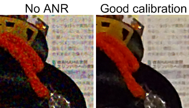
Incorrect calibration can cause over-filtering. This could be caused by damaged MCC images (miscolored areas on the color patches), or if the color patches are not selected correctly (too small or positioned incorrectly).
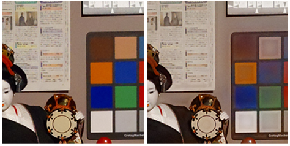
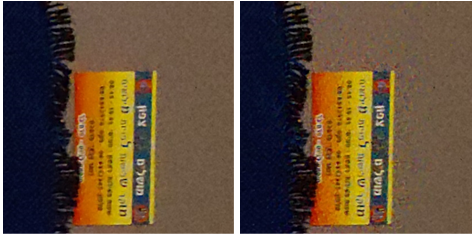
ANR for noise level low frequency with a DC16 image:
ANR for noise level mid frequency with a DC4 image:
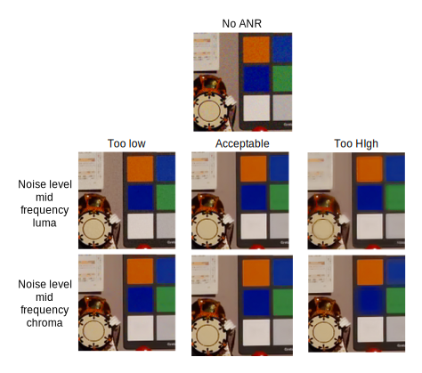
ANR for noise level high frequency with a full image:
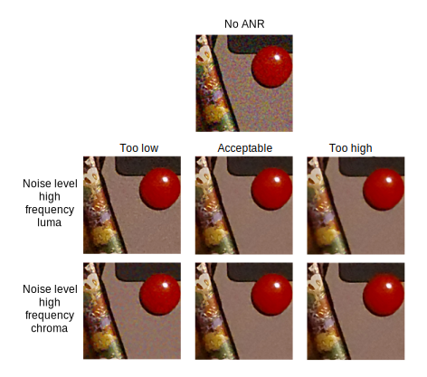
ANR for strength (DCBlend2) mid/low frequency:
Lens-dependent noise reduction (LNR) is used for aggressive or subtle radial filter behavior. Typically, running a calibration generates good results. LNR can also be used to tune when flat-field images are not available.
There are four LUTs to adjust, but it is recommended to tune one LUT and apply to the other three. Once an acceptable LUT has been created, adjust the LUTs separately as needed (e.g., more radial filtration on luma only).
Points of interest (POIs) can be used at the image corners and flat areas to understand the amount of scale that should be applied via thresholds.
Inter length control is used when flat images contain noise leftovers due to high derivatives that do not pass the thresholds. Each pass uses inter length control to check if the filtered pass beneath it is flat for a pixel. Inter length control can allow lower thresholds and preserve finer details while maintaining clean flat areas.
Inter length control may cause damage to low contrast details on flat areas, which means the pass below it has been overfiltered. This can be fixed using the Base Functions menu. Inter length control may also cause noisy edges, which are caused by a high strength.
Sometimes noise is detected correctly, but a more subtle reduction is preferred to preserve details. Just blending with the unfiltered image may reveal many unwanted peaks. Filter Final Strength enables a smart blend of filtered and unfiltered images.
Some areas with defined colors (i.e., faces or sky) require more filtering to make the image more flattering. CNR allows the base functions to be raised up to five areas in the YUV space. For skin color, CNR uses face detection indicators to avoid overfiltering areas with similar colors (i.e., wood).
- Gray edge treatment – Detects strong edges that should have low chromaticity (gray edges) and adjusts the chroma filter to filter it
- Chroma edge treatment – Performs median filter on gray edges and on areas without details that have color noise
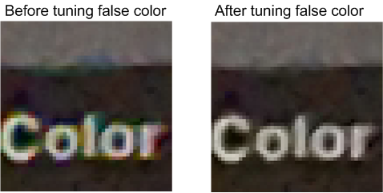
DC Blend1
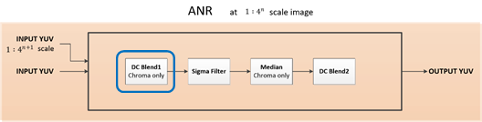
DC Blend1 subtracts coarser scale input YUV chroma channel from the current scale
YUV. It then adds the coarser scale output YUV chroma channel to the current scale.
There are no tunable parameters for this feature, except to enable or disable
it.
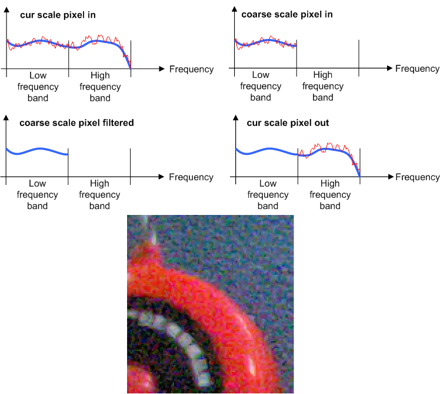
Sigma Filter
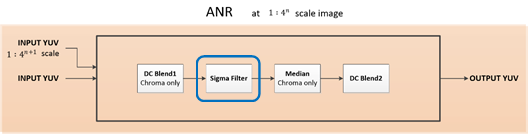
- Area flatness
- Radial distance
- Color
- False color detection
- Distance from the kernel center
Median
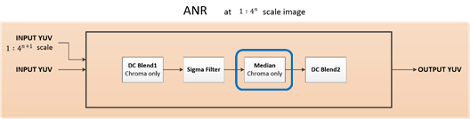
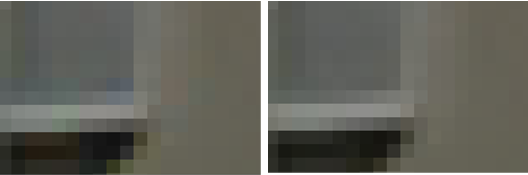
DC Blend2
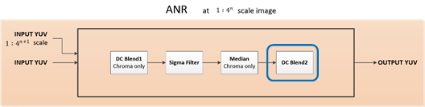
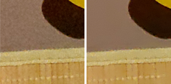